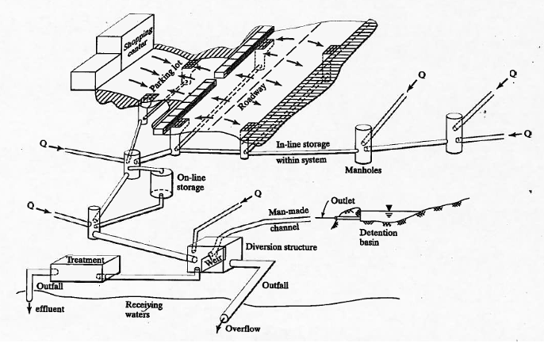

20. Stormwater Collection - Inlet Sizing#
Concepts#
Inlet on Grade
Inlet in Sag
Example Calculations#
Storm Sewers#
Storm sewers are an essential component of urban drainage systems, designed to manage the runoff generated by rainfall events. Unlike sanitary sewers, which carry wastewater, storm sewers convey rainwater and surface runoff away from streets, parking lots, and other impervious surfaces to prevent flooding and waterlogging in urban areas. These systems typically consist of a network of inlets, underground pipes, manholes, and outfalls that discharge water into nearby water bodies such as rivers, lakes, or retention basins. Properly designed storm sewer systems help reduce flood risks, protect infrastructure, and improve safety by minimizing surface water accumulation during storms.

Storm Sewer Components
Inlets to capture runoff
Conduits to convey to outfall
Lift Stations if cannot gravity flow to outfall
Detention and diversions
Outfalls release water back into environment
Hydrological Considerations in Storm Sewer Design#
Storm sewer design requires careful consideration of various hydrological factors to ensure the system can handle anticipated runoff volumes and flow rates. Some of the key hydrological aspects include:
Rainfall Intensity and Duration: The design process begins with an analysis of rainfall data, often based on intensity-duration-frequency (IDF) curves. These curves help determine the intensity and duration of rainfall events that the storm sewer system should be able to manage. Engineers typically design for specific return periods, such as a 10-year or 100-year storm event, depending on local regulations and the level of protection required. (We have already examined these topics!)
Runoff Coefficients: Runoff coefficients represent the fraction of rainfall that becomes surface runoff. These coefficients vary based on the type of land cover (e.g., impervious surfaces like roads and rooftops, or pervious areas like parks and gardens). The more impervious the area, the higher the runoff coefficient, which results in greater volumes of stormwater entering the system. (We have examined runoff generation via Unit Hydrographs as well as rational method)
Watershed Characteristics: The size, slope, and shape of the drainage area (watershed) contribute to how quickly and how much water will enter the storm sewer system. Steeper slopes typically lead to faster runoff, while larger watersheds generate greater volumes of water. These characteristics influence the required capacity of storm sewers. (The whole point of delineation, and path identification)
Time of Concentration: This is the time it takes for runoff to travel from the furthest point in the watershed to the storm sewer inlet. The time of concentration affects the peak flow rate that the system must handle. Shorter times of concentration generally lead to higher peak flows. (Synthetic unit hydrographs)
Peak Flow Estimation: Hydrologists use methods such as the Rational Method or more complex hydrological models to estimate the peak flow rate that storm sewers will need to convey. Peak flow is critical in determining the diameter of pipes and the placement of inlets to avoid overloading the system.
Infiltration and Storage: In some cases, designers incorporate infiltration or storage solutions (such as detention basins or permeable pavements) to reduce the volume and speed of water entering the storm sewer. This mitigates the risk of overwhelming the system during heavy rainfall events. (Why we model things!)
Note
There is a whole set of hydraulic concerns, these are generally handled contemporanously (at the same time) in design and analysis.